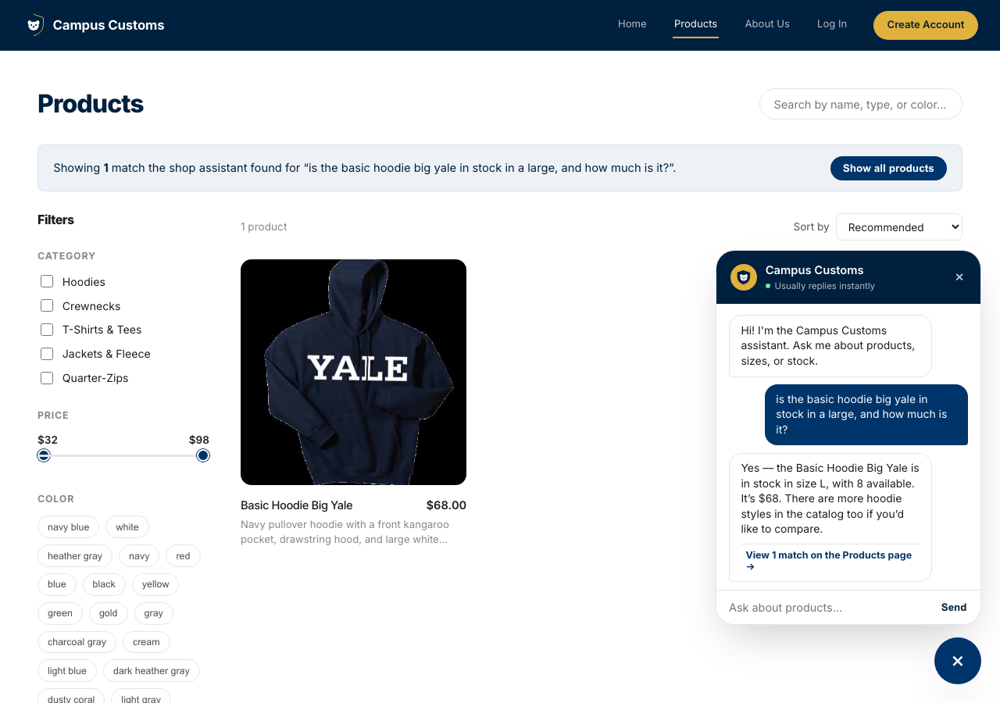
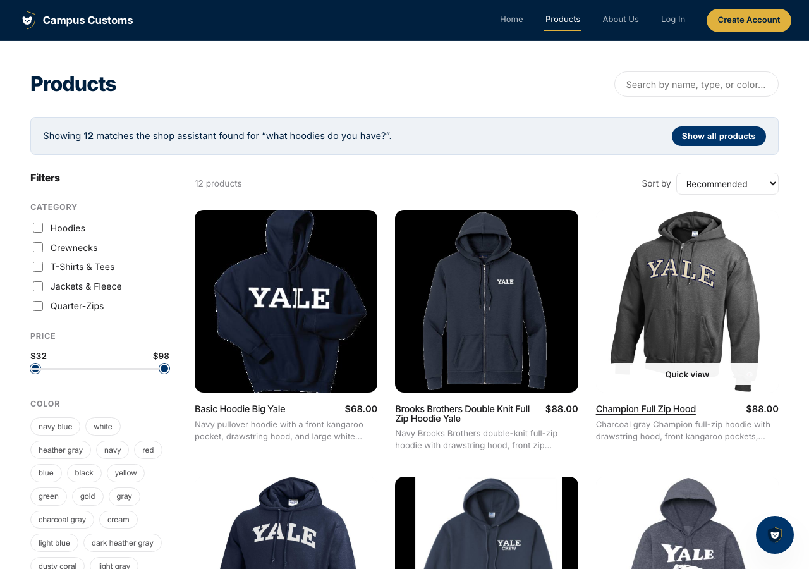
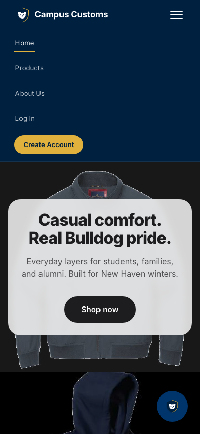

Screenshots of the running site (frontend on localhost:5180, backend on
localhost:8000) proving three specific behaviors, taken directly from a live
session — not mocked up.

Asked the chat assistant "is the basic hoodie big yale in stock in a large, and how much is it?"
It replied "in stock in size L, with 8 available. It's $68" — both numbers
match the real campus_customs.db rows exactly (inventory quantity 8 for size L,
catalogue price $68.00), not an invented or approximate answer.

Asked the chat "what hoodies do you have?" The site automatically navigated to the Products page and rendered a banner ("Showing 12 matches... for 'what hoodies do you have?'") plus a live grid of the actual matching hoodie products — image, name, price, and short description for each — pulled from the same database, not placeholder cards.

At a phone-width viewport (390px), the nav bar collapses into a hamburger icon; tapping it expands a clean, stacked link list (Home, Products, About Us, Log In, Create Account) instead of the nav items wrapping and overlapping the way they did before this usability improvement was added.